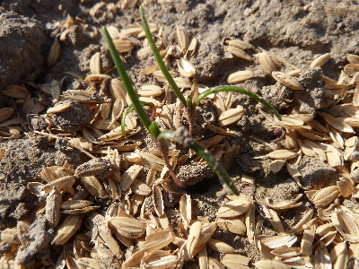
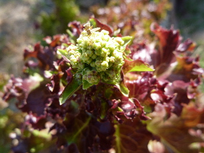
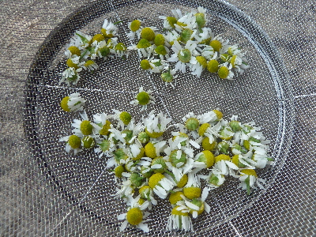
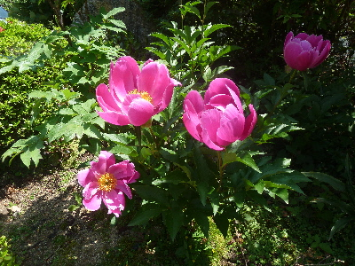
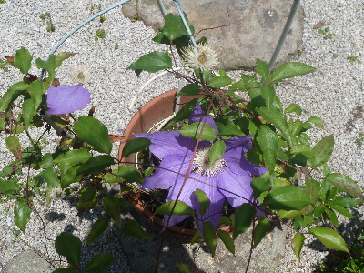
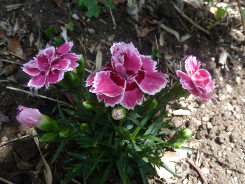
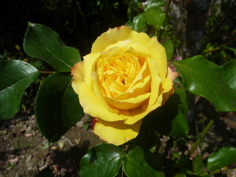
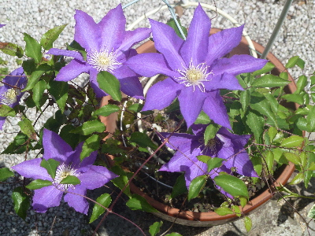
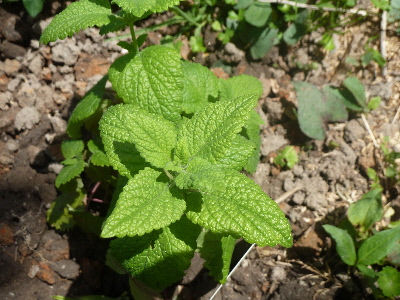

これが丘ヒジキかな。
2017/05/28
丘ヒジキの種を蒔きました。

芽が出ました。
本物を見たことないですが、これが丘ヒジキかな？
食べたことのないですが、どんな味でしょうね。楽しみです。
2017/05/28
丘ヒジキの種を蒔きました。

芽が出ました。
本物を見たことないですが、これが丘ヒジキかな？
食べたことのないですが、どんな味でしょうね。楽しみです。
2017/05/28
レタスの蕾が出来ました。

このレタスは今日の収獲で終わりです。
2017/05/20
今年はカモミールの成長が悪いです。
いつも勝手に生えて、勝手に花が咲いているので手間をかけていないですが、来年からはちょっと手を加えようかな。

今日の収獲はこれだけ。乾燥したら縮んでちょっとになりますね。
2017/05/14
庭に大きな花があるといいですね。

綺麗なうちにしっかり見ておかないと。
2017/05/14
花はすぐ散りますね。

葉っぱがもっと沢山あればグリーンとしていいんですけど、これはあまり茂らないので花が終わるととっても地味です。
2017/05/14
鉢植えよりも地植えの方が水やりが楽なので、庭に植えました。

秋までしっかり花が咲き続けてくれるかな。
2017/05/07
今年は冬に剪定したせいか、花の高さがそろっていて見栄えがいい気がします。

この花も終わったら切って、きちんと管理しよと思います。
2017/05/07
毎年、母の日が近くなると咲きますね。

綺麗なので挿し木して増やそうと思うんですが、花が終わると存在を忘れてしまうんですよね。
今年こそは挿し木をしたいと思います。
2017/05/07
ホームセンターで安く販売していたので買いました。
50円だったかな。

1本くらいだったら邪魔にならないので、試に植えました。
好みの味とか香だったらいいな。
過去の日記
畑仕事じゃないよ。